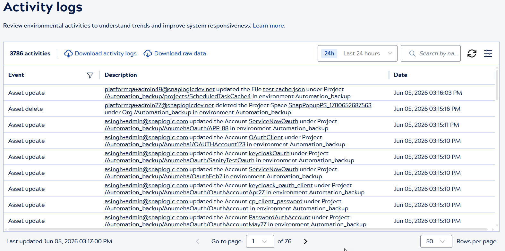
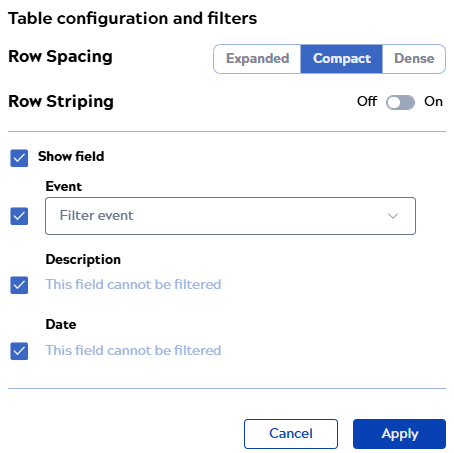
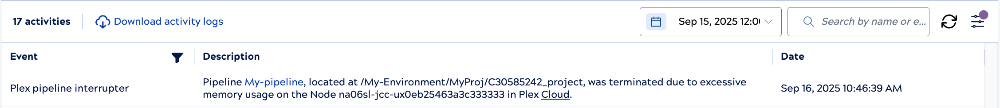
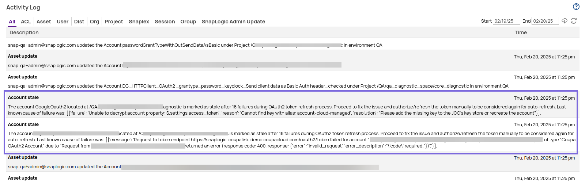
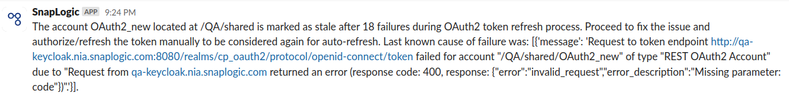

Activity logs
View and download event logs.
The Monitor Activity logs feature in SnapLogic provides Environment admins with visibility into logged events (user account changes, asset modifications, system events, Snaplex operations and performance activities). Each event has a type, description, and timestamp:

 Tip: Check out the Notification Center
Activity tab, which contains the same events as the Activity
logs page.
Tip: Check out the Notification Center
Activity tab, which contains the same events as the Activity
logs page.- Change the date range.
- Search for a string, such as a user name.
- Filter by event type.
- Download activity logs: Download formatted event data in CSV file format suitable for viewing and reporting.
- Download raw data: Download raw data with unformatted API fields in CSV file format for custom processing or integration with external systems.
Table configuration and filters

- Select any of the following row spacing options:
- Compact to show more table rows with the decreased row height.
- Expanded to show fewer table rows with the increased row height.
- Dense to display the same number of table rows as shown in the Compact view but with reduced icon size and padding.
- Enable row striping.
- Show or hide columns by checking or unchecking the box next to the name.
- Reorder columns by hovering near the name and dragging the handle that displays to the right.
- Filter columns by selecting a value from the dropdown list.
Click Apply to save the changes.
Event categories
The events logged in the Activity table are also accessible from the Public API. Select a category from the dropdown list to view events of that type. The following table describes events for each category:
| Category | Description |
|---|---|
| All activities | Events in chronological order with no filter applied. |
| ACL | Events related to user accounts, groups, and permission changes for assets. |
| APIM | APIM user activities and subscription user notifications:
|
| Asset | Events related to assets such as projects, pipelines, accounts, and files:
|
| User | Events related to user accounts:
|
| Policy |
Policy created, removed, or updated at any level in the environment, including projects and shared folders in Classic Manager and the API and version level in APIM. |
| Distribution (Dist) |
For Snap Pack distributions:
|
| Environment (Org) | Changes to environment settings:
|
| Project | Project-level change to the pipeline validation setting. |
| Snaplex | Changes to Snaplex version, state changes, and events:
|
| Session | User session start and end. |
| Group | Group created, updated, or deleted. |
| Git | Logs the following Git operations:
|
| SnapLogic admin update | Changes to SnapLogic admin access. |
| SnapGPT | Logs the following SnapGPT operations:
|
Snaplex pipeline interrupter event

OAuth2 token refresh failures
- Incorrect OAuth configuration settings
- Expired credentials (outdated API keys or access tokens)
The SnapLogic Platform detects failures in the OAuth token refresh process and marks accounts that fail 18 times as stale. This mechanism prevents the refresh of the auto-refresh for the accounts marked as stale. This applies only to accounts that have the auto-refresh functionality enabled. You can view the stale accounts in the Activity log as displayed in the image below:


Email and Slack notifications
The following table lists the events for which Environment admins can create email or Slack notifications:
| Notification category | Available types |
|---|---|
| Account | Account stale |
| ACL | User permission added to or removed from an asset's Asset Control List (ACL) |
| API | Concurrent or daily API usage |
| APIM | Migration from APIM to APIM 3.0 or pending subscription |
| Asset | Asset created, deleted, updated, moved, renamed, ownership change, or account stale |
| Broadcast message | Custom message sent to all environment users |
| Dist | Snap Pack change in the asset label, override of the FQID, or subscribe |
| Group |
Group create, delete, update, or create provisioned |
| Session | Session start, end, or SSO session |
| Snaplex | Auto scale config update, congestion, node added, node connection rejected, node crash, enter maintenance mode, leave maintenance mode, node restart, pipeline interrupter, or version update |
| Snaplex node | CPU utilization, disk usage, or memory usage |
| Task | Execution duration percentage over or time limit |
| User |
|